Chapter 1: Operating System Foundations¶
This chapter builds the mental model the rest of the guide rests on: what an operating system is for, the hardware it manages, the wall between user mode and kernel mode, and how programs cross it with system calls and interrupts. It then tours kernel designs and OS types, follows a computer from power-on to login, explains POSIX, traces OS history from CTSS to Android, maps the 2026 market and gets you started at the command line.
1.1 What an Operating System Does¶
An operating system (OS) is the master program that runs a computer. It shares out the processor, memory, storage and devices among programs, hides messy hardware details behind simple ideas like files and windows, and stops programs from harming each other or the system. Everything else — browsers, games, databases — runs on top of it.
Think of it like…
An OS is like the management of a busy hotel: it assigns rooms (memory), schedules the shared lifts and staff (CPU time), gives guests a simple front desk instead of letting them wander into the boiler room (abstraction), and makes each guest's key open only their own room (protection).
Real-world example
Amara, a student at the fictional Lakeside College, opens Spotify, a browser with 30 tabs and VS Code on her 16 GB laptop. The OS gives each program its own private memory, switches the 8 CPU cores between roughly 300 processes many times per second, and turns a click on 'Save' into block writes on her NVMe drive. When one browser tab crashes, the OS cleans up only that process; everything else keeps running.
How it works¶
- At boot the kernel takes control of the CPU, memory and devices and starts the first user program.
- Programs ask for services (open a file, send a packet, get memory) through system calls instead of touching hardware directly.
- The scheduler shares CPU time, and the memory manager gives each process its own virtual address space.
- Device drivers translate generic requests into commands for specific hardware.
- Protection checks (privilege levels, permissions, memory isolation) stop one program or user harming another.
- When a program exits, the OS reclaims every resource it held.
Who uses it
Every software developer, system administrator, DevOps/SRE engineer, security analyst and embedded engineer relies on OS knowledge daily — it is the foundation under virtualization, containers and the cloud.
Key takeaway
Memorise the three classic roles — resource manager (allocator), extended machine (abstraction) and protector (isolation); they frame most OS exam answers.
Going deeper
- Tanenbaum describes two complementary views: top-down, the OS is an 'extended machine' offering clean abstractions; bottom-up, it is a 'resource manager' multiplexing hardware in time (CPU) and in space (memory, disk).
- The core abstractions are few: processes and threads for the CPU, virtual address spaces for memory, files and directories for storage, sockets for networks, and handles or file descriptors that name them all.
- 'Operating system' is used loosely: strictly it is the privileged kernel; broadly it includes system libraries, shells, the init system, utilities and the desktop — the root of the 'Linux vs GNU/Linux' naming argument.
- Kernels are large: the Linux source tree passed roughly 40 million lines in 2025, though any one build compiles only a fraction of it, mostly the drivers for that machine's hardware.
- Good OS design separates mechanism (how to switch tasks or map pages) from policy (which task to pick, which page to evict), so policies can change without rewriting the core.
- The kernel's own overhead is normally a few percent of CPU, but pathological OS behaviour — thrashing, lock contention, excessive context switches — can make fast hardware feel slow.
Common mistakes & misconceptions
- Thinking the desktop or GUI is the OS: the graphical shell is just another program, and most servers run the same kernel with no GUI at all.
- Believing apps talk to hardware directly: ordinary programs must go through the kernel via system calls; direct hardware access is blocked.
- Equating 'Linux' with a complete OS: Linux is the kernel; distributions add GNU tools, systemd, package managers and desktops.
Try it: See what your OS is managing right now¶
# Linux / macOS
uname -a # kernel name and version
ps aux | wc -l # roughly how many processes are running
free -h # memory use (Linux)
# Windows PowerShell
Get-ComputerInfo -Property OsName,OsVersion
(Get-Process).Count
Key kernels, commands, tools, standards & concepts¶
| Name | What it does | Example |
|---|---|---|
| Operating system Concept · Current · Beginner |
Software that manages hardware, provides abstractions and services to programs, and enforces isolation between them. | Windows 11, macOS, Ubuntu Linux, Android and iOS are all operating systems built around a kernel. |
| Kernel Component · Current · Beginner |
The privileged core of the OS, running with full hardware access and handling scheduling, memory, devices and system calls. | Linux's /boot/vmlinuz-* file and Windows' ntoskrnl.exe are loaded at boot and stay in memory until shutdown. |
| Resource manager role Concept · Current · Beginner |
The OS divides CPU time, memory, disk and network bandwidth fairly and efficiently among competing programs and users. | A video render and a video call share 8 cores; the OS favours the call so its audio never stutters. |
| Time and space multiplexing Concept · Current · Beginner |
Sharing a resource by taking turns (CPU time slices) or by dividing it into parts (memory regions, disk blocks). | Four programs take turns on one core every few milliseconds, while each also owns a separate slice of the 16 GB RAM. |
| Abstraction (extended machine) Concept · Current · Beginner |
Turning raw hardware into simple, uniform ideas — files, processes, sockets, windows — so programmers needn't know device details. | A Python program calls open('notes.txt') and works identically on an SSD, a USB stick or a network share. |
| Protection and isolation Concept · Current · Beginner |
Mechanisms ensuring one process or user cannot read, change or crash another's memory, files or the kernel itself. | A crashing game shows an error and exits, while your unsaved document in another app is unaffected. |
| Policy vs mechanism Concept · Current · Intermediate |
Design principle separating how something is done (mechanism) from the rules deciding what is done (policy). | Linux's scheduler mechanism stays the same while sched_ext lets administrators plug in a different scheduling policy. |
| Multiprogramming Concept · Current · Beginner |
Keeping several programs in memory so the CPU can run another whenever the current one waits for I/O. | While a payroll job waits for a tape or disk read, the mainframe runs a second job instead of sitting idle. |
| Preemptive multitasking Concept · Current · Beginner |
The OS forcibly switches between tasks using timer interrupts, so no single program can monopolise the CPU. | An infinite loop in one app cannot freeze Windows 11 or macOS; other windows stay responsive. |
| Multi-user operating system Concept · Current · Beginner |
An OS that lets several users work at once or in turn, each with separate accounts, files and permissions. | Forty students log in by SSH to one university Linux server, each confined to their own home directory. |
| System programs and utilities Software · Current · Beginner |
Programs shipped with the OS for everyday management: file tools, editors, compilers, shells and service managers. | ls, cp, ps and systemctl on Linux, or Task Manager and Disk Management on Windows, are system programs. |
| Desktop environment (graphical shell) GNOME, KDE Plasma, Windows Explorer, macOS Finder · Software · Current · Beginner |
The windows, panels, menus and file manager that form the graphical face of an OS — an ordinary user program. | Ubuntu uses GNOME by default and Kubuntu uses KDE Plasma, yet both run on the same Linux kernel. |
1.2 The Hardware an OS Manages¶
To understand an OS you need a mental picture of the machine underneath: a CPU with cores and registers that execute instructions, memory (RAM) that holds running programs, storage that keeps data when the power is off, and devices connected through buses. The OS's job is to share all of these safely.
Think of it like…
The computer is a kitchen: CPU cores are chefs, registers are what each chef holds in their hands, cache is the worktop, RAM is the fridge, the SSD is the storeroom down the corridor — and the OS is the head chef handing out work.
Real-world example
Ravi's fictional start-up, PixelPress, rents a cloud server with 16 vCPUs, 64 GB of RAM and a 1 TB NVMe disk. Reading from L1 cache takes about 1 ns, from RAM about 100 ns, and from the NVMe disk around 100 µs — roughly 100,000 times slower than cache. That gap is why the OS keeps recently used file data in RAM and why PixelPress's database is sized to fit its hot data in memory.
How it works¶
- The CPU repeatedly fetches an instruction, decodes it and executes it, using registers for working values.
- The instruction pointer (program counter) says which instruction comes next; the stack pointer tracks function calls.
- The memory management unit (MMU) translates every virtual address a program uses into a physical RAM address.
- Devices (disks, network cards, GPUs) are driven through control registers, move data to RAM by DMA, then raise interrupts.
- A hardware timer interrupts the CPU periodically so the OS can regain control and switch tasks.
Who uses it
OS developers, performance engineers, embedded engineers and anyone sizing servers or troubleshooting slowness need this hardware picture.
Key takeaway
Memorise the latency ladder in rough powers of ten — register < cache < RAM < SSD < network/disk — interviewers love 'why does the page cache matter so much?'
Going deeper
- A modern x86-64 core has 16 general-purpose 64-bit registers (RAX-R15), the instruction pointer RIP, RFLAGS and, with AVX-512, 32 vector registers of 512 bits — all part of the state saved on every context switch.
- Caches come in levels: L1 is typically 32-64 KB per core, L2 one to a few megabytes per core, and a shared L3 tens of megabytes; cache lines are 64 bytes on x86 and most Arm cores.
- Symmetric multiprocessing (SMP) means all cores share memory and run one kernel; NUMA servers give each socket its own local memory, so the OS tries to keep each thread near its data.
- Hybrid CPUs — Intel's P-cores and E-cores since 12th-gen Core (2021), Arm big.LITTLE and Apple's performance and efficiency cores — force the scheduler to decide where a thread runs, not just when.
- Simultaneous multithreading (Intel Hyper-Threading, AMD SMT) exposes two logical CPUs per core that share execution units, so 16 logical CPUs are not sixteen times one core's speed.
- Devices are reached through memory-mapped I/O or x86 I/O ports; PCI Express links connect NVMe drives, GPUs and NICs, and an IOMMU restricts which memory each device may access.
Common mistakes & misconceptions
- Assuming more cores always means faster programs: single-threaded code uses one core; the OS can only spread work that is already split into threads or processes.
- Confusing RAM with storage: 'memory' is volatile working space, while 'storage' (SSD, disk) keeps data without power and is thousands of times slower.
- Ignoring NUMA on large servers: a thread on socket 0 reading memory attached to socket 1 pays a noticeable latency penalty.
Try it: Inspect your CPU, memory and disks¶
# Linux
lscpu | head -20 # cores, threads, caches, NUMA nodes
lsblk # disks and partitions
head -3 /proc/meminfo
# macOS
sysctl -n machdep.cpu.brand_string hw.ncpu hw.memsize
# Windows PowerShell
Get-CimInstance Win32_Processor | Select-Object Name,NumberOfCores,NumberOfLogicalProcessors
Key kernels, commands, tools, standards & concepts¶
| Name | What it does | Example |
|---|---|---|
| CPU core Intel, AMD, Arm licensees, RISC-V vendors · Component · Current · Beginner |
An independent execution unit that fetches, decodes and runs instructions; one chip may contain dozens of cores. | An AMD Ryzen 7 9700X has 8 cores and 16 hardware threads, so the OS sees 16 logical CPUs. |
| Registers Component · Current · Beginner |
The fastest, tiny storage inside a core, holding current values, the instruction pointer and the stack pointer. | On x86-64 the RIP register holds the address of the next instruction and RSP points to the top of the stack. |
| Instruction set architecture (ISA) Intel/AMD (x86-64), Arm (AArch64), RISC-V International · Standard · Current · Beginner |
The contract between software and CPU: instructions, registers, privilege modes and memory model. | Apple M-series Macs and Windows on Arm laptops run Arm64 code; most cloud servers run x86-64, with Arm instances such as AWS Graviton growing. |
| Cache hierarchy Concept · Current · Beginner |
Small, fast memories (L1, L2, L3) between core and RAM that keep recently used data close to the CPU. | A loop over a 20 KB array stays in L1 cache and runs many times faster than code jumping randomly through 4 GB. |
| RAM (DRAM) JEDEC (DDR5, LPDDR5X standards) · Component · Current · Beginner |
Main memory holding running programs and their data: fast but volatile, so its contents vanish at power-off. | A laptop with 16 GB of DDR5 holds the OS, browser and editor; when it fills, the OS compresses or swaps out pages. |
| Storage device (SSD/HDD) NVM Express, SATA-IO · Component · Current · Beginner |
Non-volatile storage for files and the OS itself, read and written in blocks through device drivers. | A PCIe 4.0 NVMe SSD reads around 7 GB/s sequentially, yet small random reads are still far slower than RAM. |
| Hardware timer Component · Current · Intermediate |
A clock device that interrupts the CPU at set intervals, letting the OS regain control for scheduling and timekeeping. | Linux kernels typically tick at 250 or 1,000 Hz (CONFIG_HZ), meaning every 4 ms or every 1 ms. |
| PCI Express PCI-SIG · Standard · Current · Intermediate |
High-speed serial interconnect linking CPUs to GPUs, NVMe drives and network cards; each generation roughly doubles per-lane bandwidth. | A PCIe 5.0 x4 NVMe SSD can reach about 14 GB/s; the OS discovers it by enumerating the PCIe bus at boot. |
| SMP and multicore Concept · Current · Intermediate |
Symmetric multiprocessing: all cores share memory and any core can run kernel code, so the kernel needs careful locking. | `nproc` prints how many logical CPUs the OS sees; Linux supports systems with thousands of them. |
| NUMA Concept · Current · Advanced |
Non-Uniform Memory Access: on multi-socket servers each CPU has local RAM that is faster than another socket's RAM. | `numactl --hardware` on a 2-socket database server shows two nodes; binding PostgreSQL to one node cuts memory latency. |
| Hybrid (heterogeneous) cores Intel, Arm, Apple · Concept · Current · Intermediate |
Chips mixing fast performance cores with power-saving efficiency cores, requiring smarter OS scheduling. | An Intel Core Ultra laptop runs background indexing on E-cores while the game in focus stays on P-cores. |
| SMT / Hyper-Threading Intel (Hyper-Threading), AMD (SMT) · Concept · Current · Intermediate |
One physical core presents two logical CPUs that share its execution units to fill idle cycles. | A 4-core, 8-thread laptop shows 8 CPUs in Task Manager, but heavy maths may gain only 10-30% from the extra threads. |
1.3 Kernel Space vs User Space and Privilege Rings¶
The CPU has at least two modes: a privileged kernel mode where any instruction and any memory is allowed, and a restricted user mode for ordinary programs. The kernel runs in kernel mode; apps run in user mode and must ask the kernel for anything sensitive. This split is what stops one buggy app from crashing the whole machine.

Think of it like…
It is like a bank: customers (user mode) stay in the public hall and hand forms across the counter, while only staff (kernel mode) may enter the vault — the counter window is the system call.
Real-world example
Leo, a student at the fictional Northgate University, writes a C program that executes the privileged x86 instruction `hlt` to halt the CPU. Because his program runs in ring 3, the CPU raises a general-protection fault instead; Linux catches it and kills the program with SIGSEGV while every other program keeps running. The same instruction in the kernel's idle loop, running in ring 0, works normally.
How it works¶
- At power-on the CPU starts in its most privileged mode; the kernel sets up page tables and interrupt tables, then drops to user mode to run the first program.
- Every memory page is marked user or supervisor; user-mode code touching a supervisor page triggers a fault.
- Privileged instructions (loading page tables, disabling interrupts, port I/O) fault if executed in user mode.
- To request a service, user code executes a special instruction (syscall, svc or ecall) that switches to kernel mode at a fixed entry point.
- The kernel validates the request, does the work and returns to user mode with a result.
Who uses it
Kernel and driver developers, security researchers, exploit analysts and anyone debugging crashes ('kernel panic' versus 'segfault') work with this boundary.
Key takeaway
x86 has four rings but mainstream OSes use only ring 0 (kernel) and ring 3 (user); on Arm the equivalents are EL0 (apps) and EL1 (kernel), with EL2 for hypervisors and EL3 for secure firmware.
Going deeper
- On x86 the current privilege level (CPL) is held in the low two bits of the CS register; the interrupt descriptor table and the page-table user/supervisor bit together decide what ring-3 code can reach.
- Linux maps the kernel into the upper half of every process's virtual address space, so a system call does not need a full address-space switch, while user programs live in the lower half.
- The 2018 Meltdown flaw let user code speculatively read kernel memory; Kernel Page-Table Isolation (KPTI, called KVA Shadow on Windows) now unmaps most of the kernel while user code runs, costing a few percent on syscall-heavy workloads.
- SMEP (Intel Ivy Bridge, 2012) and SMAP (Broadwell, 2014), with AMD equivalents, stop the kernel from executing or casually reading user pages, blocking a whole class of privilege-escalation exploits.
- Arm defines four exception levels — EL0 applications, EL1 kernel, EL2 hypervisor, EL3 secure monitor for TrustZone — while RISC-V uses U, S and M modes plus a hypervisor extension.
- Some code runs 'below ring 0': hypervisors (informally ring −1), System Management Mode (ring −2) and management engines (ring −3); flaws there are serious because the OS cannot observe them.
- Moving code out of the kernel improves robustness: Windows' UMDF and Linux FUSE run drivers and file systems as ordinary processes, so their crashes do not take the system down.
Common mistakes & misconceptions
- Thinking 'running as root or Administrator' means kernel mode: admin processes still run in user mode; they are simply allowed to make more privileged requests.
- Picturing the kernel as a separate process running beside apps: most kernel code runs on behalf of a process during its system calls and interrupts.
- Assuming user-mode programs can't hurt the system: they can't directly, but a faulty kernel-mode driver (as in the July 2024 CrowdStrike outage) crashes the whole machine.
Try it: Watch time spent in user mode vs kernel mode¶
# Linux/macOS: 'user' vs 'sys' time of one command
time ls -R /usr > /dev/null
# Linux: per-second user (us) vs system (sy) CPU percentages
vmstat 1 5
# Windows: Task Manager > Performance > CPU, right-click graph > 'Show kernel times'
Key kernels, commands, tools, standards & concepts¶
| Name | What it does | Example |
|---|---|---|
| User mode Concept · Current · Beginner |
Restricted CPU mode for applications: privileged instructions and kernel memory are off-limits. | Your web browser, text editor and even a root shell all execute in user mode. |
| Kernel mode (supervisor mode) Concept · Current · Beginner |
Privileged CPU mode in which code may run any instruction and access all memory and devices. | The Linux scheduler, the ext4 file-system code and the Wi-Fi driver all run in kernel mode. |
| Protection rings (x86) Intel / AMD · Concept · Current · Intermediate |
Four privilege levels (0-3) on x86; ring 0 is most privileged and mainstream OSes use only rings 0 and 3. | A ring-3 program executing `cli` (disable interrupts) gets a general-protection fault instead of freezing the PC. |
| Arm exception levels (EL0-EL3) Arm · Concept · Current · Intermediate |
Arm's privilege model: EL0 applications, EL1 OS kernel, EL2 hypervisor, EL3 secure-monitor firmware. | On recent Pixel phones apps run at EL0, the Linux kernel at EL1 and Google's pKVM hypervisor at EL2. |
| RISC-V privilege modes RISC-V International (Privileged Specification) · Concept · Current · Advanced |
User (U), Supervisor (S) and Machine (M) modes, plus a hypervisor extension, defined in the RISC-V privileged spec. | OpenSBI firmware runs in M-mode and provides services to a Linux kernel running in S-mode on a RISC-V board. |
| Privileged instruction Concept · Current · Intermediate |
A CPU instruction only kernel mode may execute, such as loading page tables, halting or disabling interrupts. | Writing the x86 CR3 register switches page tables — only the kernel does this, on every process switch. |
| Mode switch Concept · Current · Intermediate |
The CPU moving between user and kernel mode via a system call, interrupt or exception; cheaper than a full context switch. | A program calling getpid() makes a mode switch into the kernel and back, usually in well under a microsecond. |
| Kernel address space Concept · Current · Intermediate |
The region of every process's virtual memory reserved for kernel code and data, mapped but inaccessible from user mode. | On 64-bit Linux, user programs live in the lower half of the address space and the kernel in the upper half. |
| KPTI (Kernel Page-Table Isolation) Linux 4.15 (2018); Windows 'KVA Shadow' · Component · Current · Advanced |
Separate page tables that hide kernel memory from user mode, defeating the Meltdown attack. | `cat /sys/devices/system/cpu/vulnerabilities/meltdown` prints 'Mitigation: PTI' on affected Intel CPUs. |
| SMEP / SMAP Intel / AMD · Concept · Current · Advanced |
CPU features that stop the kernel executing (SMEP) or unexpectedly accessing (SMAP) user-space memory. | `grep -o -w -E 'smep|smap' /proc/cpuinfo | sort -u` shows whether your CPU supports them. |
| System Management Mode (SMM) Intel / AMD · Concept · Current · Advanced |
Hidden x86 firmware mode, more privileged than the OS, used for power and platform handling. | Vulnerable SMM handlers let attackers hide code that even the OS kernel cannot detect or remove. |
| User-mode drivers Microsoft UMDF; Linux FUSE and UIO · Concept · Current · Intermediate |
Device or file-system drivers running as ordinary processes, so their crashes don't bring down the kernel. | Windows UMDF drivers for some USB devices and Linux's sshfs (a FUSE file system) run outside the kernel. |
| Kernel panic / Blue Screen Concept · Current · Beginner |
The OS halts deliberately when kernel-mode code hits an unrecoverable error, to avoid corrupting data. | A faulty driver triggers a Linux 'kernel panic' or a Windows stop error (BSOD); a user-mode crash just ends one app. |
1.4 System Calls End to End¶
A system call is how a program asks the kernel to do something it isn't allowed to do itself — read a file, start a process, send network data. The program places a request number and arguments in CPU registers, executes a special instruction, and the CPU jumps into the kernel, which does the work and returns a result or an error code.

Think of it like…
It is like ordering at a drive-through: you can't walk into the kitchen, so you speak your order number into the speaker (the syscall number), drive to the window (the mode switch) and receive your food — or a 'sorry, sold out' (an error code).
Real-world example
When Sofia runs `cat notes.txt` on her Ubuntu laptop, cat calls the C library's open(), read() and write(). glibc puts system-call number 257 (openat) in the RAX register and the file path in RSI, then executes the `syscall` instruction. The kernel checks permissions, finds the file in the page cache and returns file descriptor 3; a later read() copies 1,200 bytes into cat's buffer. Running `strace cat notes.txt` shows every one of these calls.
How it works¶
- The program calls a library wrapper such as read() in libc (on Windows, a Win32 function such as ReadFile, which calls into ntdll.dll).
- The wrapper loads the system-call number and arguments into registers — on Linux x86-64 the number goes in RAX and arguments in RDI, RSI, RDX, R10, R8 and R9.
- It executes the trap instruction — `syscall` on x86-64, `svc #0` on Arm64, `ecall` on RISC-V — switching the CPU to kernel mode.
- Kernel entry code saves user registers, looks the number up in the system-call table and calls the matching handler.
- The handler validates pointers and permissions, does the work (perhaps sleeping until I/O completes) and sets a return value.
- The kernel restores registers and returns to user mode; on failure libc stores a code such as ENOENT in errno and returns −1.
Who uses it
Systems programmers, performance engineers, security engineers writing seccomp or EDR rules, and anyone answering 'why is this program hanging?' with strace.
Key takeaway
Know a few Linux x86-64 numbers (read = 0, write = 1, execve = 59) and the tracing tools: strace on Linux, dtruss/DTrace on macOS and Process Monitor on Windows.
Going deeper
- Linux x86-64 defines more than 450 system-call numbers in arch/x86/entry/syscalls/syscall_64.tbl; new calls are appended and old numbers are never reused, so binaries keep working for decades.
- The vDSO is a small kernel-provided library mapped into every Linux process so calls such as clock_gettime() and gettimeofday() run entirely in user mode without any mode switch.
- Windows does not document its system-call numbers and changes them between builds; programs must call ntdll.dll (NtReadFile and friends) or Win32 APIs, so Windows compatibility is kept at the API level.
- Linux's stable system-call ABI ('we do not break user space') lets containers run an Alpine userland on an Ubuntu host kernel and lets gVisor and WSL 1 reimplement the interface.
- A trivial system call costs very roughly 100 nanoseconds on modern x86, but security mitigations can multiply that, which is why batching interfaces such as io_uring and sendmmsg exist.
- Older entry mechanisms (int 0x80, sysenter) gave way to `syscall`; Intel's FRED (Flexible Return and Event Delivery), enabled by default in recent Linux 7.x kernels on supporting CPUs, redesigns ring transitions.
- seccomp lets a process install a filter restricting which system calls it may make — the basis of Docker's default profile and Chrome's sandbox, covered with OS security later in this guide.
Common mistakes & misconceptions
- Confusing library functions with system calls: printf() is a libc function that buffers text and only occasionally calls write(); many libc functions make no system call at all.
- Reading errno after a successful call: errno is meaningful only after a function reports failure, usually by returning −1; check the return value first.
- Assuming system calls are free: a loop doing one-byte read() calls can be hundreds of times slower than reading 64 KB at once.
Try it: Watch every system call a command makes (Linux)¶
strace -c ls /tmp # summary table of system calls
strace -e trace=openat cat /etc/hostname # only file opens
strace -f -e trace=network curl -sI https://example.com
# Windows: Sysinternals Process Monitor shows file, registry and process calls
Key kernels, commands, tools, standards & concepts¶
| Name | What it does | Example |
|---|---|---|
| System call Concept · Current · Beginner |
The controlled entry point through which a user program requests a kernel service, switching the CPU into kernel mode. | Opening, reading and closing a file takes at least three system calls: openat, read and close. |
| System-call table Component · Current · Intermediate |
Kernel array mapping each system-call number to its handler function. | On Linux x86-64, entry 0 is read, 1 write, 39 getpid, 59 execve and 60 exit. |
| syscall / svc / ecall instructions Intel/AMD, Arm, RISC-V · Concept · Current · Advanced |
The CPU instructions that trap into the kernel on x86-64, Arm64 and RISC-V respectively. | Disassembling glibc's read() with objdump shows a `syscall` instruction right after the number is loaded into EAX. |
| C standard library (libc) GNU glibc, musl, Apple libSystem, Microsoft UCRT · Software · Current · Beginner |
Library wrapping system calls in friendly C functions, plus strings, memory allocation, maths and more. | Alpine Linux uses musl and Ubuntu uses glibc; the same C source compiles against either. |
| ntdll.dll and the Native API Microsoft · API · Current · Advanced |
Windows' lowest user-mode layer: Win32 calls such as CreateFileW end in ntdll stubs like NtCreateFile that enter the kernel. | Malware analysts watch calls such as NtWriteVirtualMemory in ntdll to spot code being injected into other processes. |
| read() / write() POSIX · System call · Current · Beginner |
Copy bytes between a file descriptor and a memory buffer — the basis of nearly all Unix I/O. | write(1, "hi\n", 3) prints 'hi' on standard output without using printf. |
| openat() / close() POSIX · System call · Current · Intermediate |
openat opens a file by path (relative to a directory) and returns a file descriptor; close releases it. | strace shows openat(AT_FDCWD, "/etc/hostname", O_RDONLY) = 3 when you run cat /etc/hostname. |
| getpid() POSIX · System call · Current · Intermediate |
Returns the calling process's ID — one of the simplest system calls, often used to measure raw syscall overhead. | A microbenchmark calling getpid() a million times measures the cost of entering and leaving the kernel. |
| errno POSIX / ISO C · Concept · Current · Beginner |
Thread-local variable holding the error code after a failed call, such as ENOENT (no such file) or EACCES (permission denied). | Opening a missing file returns −1 with errno = ENOENT, and perror() prints 'No such file or directory'. |
| vDSO Linux kernel · Component · Current · Advanced |
Kernel-supplied shared library mapped into each process that runs selected time-related calls entirely in user mode. | `ldd /bin/ls` lists linux-vdso.so.1 with no file path, because the kernel itself provides it. |
| strace Open source (Linux) · Tool · Current · Intermediate |
Traces the system calls and signals of a process using ptrace, showing arguments and return values. | strace -f -e trace=network curl example.com shows the socket, connect and sendto calls that curl makes. |
| Process Monitor Microsoft Sysinternals · Tool · Current · Intermediate |
Windows tool logging real-time file, registry, network and process activity of every program. | A help-desk engineer filters ProcMon on 'NAME NOT FOUND' to find the missing DLL that stops an app starting. |
| DTrace / dtruss Originally Sun Microsystems; macOS and FreeBSD · Tool · Current · Advanced |
Dynamic tracing framework; its dtruss script shows a process's system calls on macOS. | sudo dtruss ls lists the open and getdirentries calls ls makes; System Integrity Protection may limit full tracing. |
| Stable syscall ABI ('don't break user space') Linux kernel policy · Concept · Current · Intermediate |
Linux promises that system-call numbers and behaviour visible to programs never change incompatibly. | A statically linked program built in 2005 still runs on a 2026 Linux 7.x kernel. |
1.5 Interrupts, Exceptions and Traps¶
Interrupts are signals that make the CPU stop what it is doing and run kernel code. Hardware interrupts come from devices ('a network packet arrived'); exceptions come from the running instruction itself ('divide by zero', 'that page isn't in memory'); traps are deliberate, like a system call or a debugger breakpoint.

Think of it like…
A chef cooking (the CPU) can be interrupted by the doorbell (hardware interrupt), by burning a hand on the pan (exception) or by deliberately ringing for the manager (trap) — each time they put the pan down, deal with it and carry on.
Real-world example
On the fictional Riverside Hospital's file server, a 25 Gbit network card receives a burst of packets. Instead of interrupting for every packet, it raises one MSI-X interrupt on CPU 3; the handler acknowledges it within microseconds and schedules NAPI polling in a softirq, which processes up to 64 packets per batch. Meanwhile CPU 5 takes a page-fault exception when the database touches memory that was swapped out, and the kernel loads the page before re-running the instruction.
How it works¶
- A device asserts an interrupt (or the CPU detects an exception); the interrupt controller (APIC on x86, GIC on Arm) delivers a vector number to a CPU.
- The CPU finishes or abandons the current instruction, saves the instruction pointer and flags, and switches to kernel mode and a kernel stack.
- It looks up the vector in the interrupt descriptor table (IDT) or Arm vector table and jumps to the handler.
- The 'top half' does the minimum: acknowledge the device, grab urgent data, schedule deferred work.
- Deferred 'bottom half' work (softirqs, tasklets, workqueues, threaded IRQs; DPCs on Windows) runs soon after with interrupts enabled.
- The kernel returns from the interrupt (iretq on x86, eret on Arm), possibly switching to a different task if a reschedule is due.
Who uses it
Kernel and driver developers, embedded and firmware engineers, real-time engineers, and performance tuners who set IRQ affinity on busy network servers.
Key takeaway
Interview classic: hardware interrupts are asynchronous (independent of the current instruction), while exceptions and traps are synchronous (caused by it); a page fault is a restartable fault.
Going deeper
- x86 has 256 interrupt vectors: 0-31 are reserved for CPU exceptions (0 divide error, 3 breakpoint, 6 invalid opcode, 13 general protection, 14 page fault) and the rest serve devices and inter-processor interrupts.
- Exceptions come in three kinds: faults are restartable (a page fault re-runs the instruction), traps are reported after the instruction (int3 breakpoint) and aborts are unrecoverable (double fault, machine check).
- Message-Signalled Interrupts replace interrupt wires with memory writes; MSI-X allows up to 2,048 vectors per device, so a multi-queue NIC or NVMe drive can steer each queue to its own CPU.
- Windows orders interrupt work by Interrupt Request Level: device ISRs run at high IRQL and queue Deferred Procedure Calls at DISPATCH_LEVEL; touching pageable memory at high IRQL causes the IRQL_NOT_LESS_OR_EQUAL blue screen.
- At very high packet rates interrupts can starve real work (interrupt livelock), so drivers switch to polling: Linux NAPI, NIC interrupt coalescing and busy-polling for ultra-low-latency systems.
- Non-maskable interrupts cannot be disabled; Linux uses them for the hard-lockup watchdog and perf sampling, and a server's NMI button can force a crash dump of a hung machine.
- Inter-processor interrupts let one CPU poke another — to reschedule, run a function remotely or shoot down stale TLB entries after a page-table change.
Common mistakes & misconceptions
- Doing slow work in an interrupt handler: handlers must not sleep or wait; defer heavy processing to a bottom half or kernel thread.
- Calling every unusual event a 'trap': strictly, hardware interrupts are asynchronous, while traps and faults are caused by the current instruction.
- Assuming every page fault is an error: most are normal (demand paging, copy-on-write); only invalid accesses become segmentation faults.
Try it: Watch interrupts arrive¶
# Linux: interrupt counts per CPU and per device
head -15 /proc/interrupts
watch -n1 "grep -i -E 'nvme|eth|enp|LOC' /proc/interrupts"
# Windows: interrupts per second
typeperf "\Processor(_Total)\Interrupts/sec" -sc 5
Key kernels, commands, tools, standards & concepts¶
| Name | What it does | Example |
|---|---|---|
| Hardware interrupt (IRQ) Concept · Current · Beginner |
Asynchronous signal from a device asking the CPU for attention, such as completed disk I/O or a key press. | Each keystroke on a USB keyboard ends in an interrupt that wakes the kernel's input driver. |
| Exception (fault, trap, abort) Concept · Current · Intermediate |
Synchronous event caused by the current instruction, such as divide-by-zero, an invalid opcode or a page fault. | Integer division by zero in C triggers x86 vector 0, and Linux sends the process SIGFPE. |
| Trap (software interrupt) Concept · Current · Intermediate |
An intentional exception used to enter the kernel or a debugger, such as a system-call instruction or int3. | A debugger sets a breakpoint by overwriting an instruction's first byte with int3 (0xCC). |
| General protection fault (#GP) Intel / AMD · Concept · Current · Intermediate |
x86 exception for privilege and segment violations, such as user code running a privileged instruction. | A ring-3 program executing `hlt` gets #GP (vector 13); Linux delivers SIGSEGV and the shell prints 'Segmentation fault'. |
| Interrupt Descriptor Table (IDT) Intel / AMD · Component · Current · Advanced |
x86 table of up to 256 entries mapping each interrupt or exception vector to its handler. | Old rootkits hooked IDT entries; modern kernels protect the table and Windows PatchGuard checks it for tampering. |
| APIC / GIC Intel/AMD (APIC); Arm (GIC) · Component · Current · Advanced |
Interrupt controllers that route device interrupts to CPU cores: the APIC family on x86, the Generic Interrupt Controller on Arm. | The Raspberry Pi 4's BCM2711 chip uses an Arm GIC-400 to route interrupts to its four cores. |
| MSI / MSI-X PCI-SIG · Standard · Current · Advanced |
Message-signalled interrupts: PCIe devices raise interrupts by writing to a special address instead of using a wire. | An NVMe SSD gives each I/O queue its own MSI-X vector so completions land on the CPU that issued the request. |
| Interrupt handler (ISR) / top half Concept · Current · Intermediate |
Short, fast kernel routine run immediately on an interrupt; acknowledges the device and defers the rest. | A network driver's ISR masks further receive interrupts and schedules NAPI polling. |
| Bottom halves: softirq, tasklet, workqueue Linux kernel · Component · Current · Advanced |
Linux mechanisms for deferred interrupt work that runs later with interrupts enabled; workqueues may even sleep. | The ksoftirqd/N kernel threads in `ps` output process network softirqs when there is too much to finish inline. |
| DPC and IRQL Microsoft Windows · Concept · Current · Advanced |
Windows' Deferred Procedure Calls and Interrupt Request Levels, which order interrupt work by priority. | LatencyMon reveals which driver's DPCs cause audio crackles on a Windows music-production PC. |
| Non-maskable interrupt (NMI) Concept · Current · Advanced |
High-priority interrupt that cannot be disabled, used for critical hardware errors, watchdogs and debugging. | Linux's hard-lockup detector uses NMIs to report 'NMI watchdog: hard LOCKUP' when a CPU stops responding. |
| Inter-processor interrupt (IPI) Concept · Current · Advanced |
An interrupt one CPU sends to another, for rescheduling, TLB shootdowns or remote function calls. | The RES and TLB lines in /proc/interrupts count rescheduling and TLB-shootdown IPIs on each CPU. |
| Timer interrupt and tickless kernel Concept · Current · Intermediate |
Periodic timer interrupts drive scheduling and timekeeping; tickless (NO_HZ) kernels stop the tick on idle CPUs to save power. | With CONFIG_NO_HZ_IDLE, an idle laptop core sleeps deeply instead of waking 1,000 times a second. |
1.6 OS Architectures: Monolithic, Microkernel, Hybrid, Unikernel, Exokernel¶
Kernels are built in different shapes. A monolithic kernel puts almost everything — drivers, file systems, networking — into one big privileged program; a microkernel keeps only the bare minimum privileged and runs everything else as separate user-mode servers; hybrid kernels mix the two. Unikernels and exokernels are more radical designs for special uses.
Three classic kernel designs
| Monolithic | Microkernel | Hybrid | |
|---|---|---|---|
| In kernel mode | Everything: drivers, FS, network | Scheduling, memory, IPC only | Core plus most services |
| Drivers run | Inside the kernel | As user-mode servers | Mostly inside the kernel |
| Driver crash | Can panic the system | Restart that server | Can crash the system |
| Service calls | Function calls | IPC messages | Mostly function calls |
| Examples | Linux, FreeBSD, OpenBSD | seL4, QNX, MINIX 3, Zircon | Windows NT, Apple XNU |
The real difference is what runs in kernel mode, and therefore what a single bug can take down.
Think of it like…
A monolithic kernel is an open-plan office where everyone shouts across desks (fast, but one fire spreads everywhere); a microkernel is a building of locked rooms passing notes under the doors (safer, slower); a unikernel is a food truck built to serve exactly one dish.
Real-world example
The fictional carmaker Volta Motors chooses QNX, a microkernel real-time OS, for its digital dashboard: if the graphics driver crashes, it restarts in milliseconds while the speedometer keeps updating. Its cloud back-end runs on Linux, a monolithic kernel, for raw throughput, and its research team is testing a Unikraft unikernel that boots a small web service in a few milliseconds.
How it works¶
- Decide what must run privileged: at minimum, address-space management, thread scheduling and inter-process communication (IPC).
- Monolithic: link drivers, file systems and the network stack into the kernel; components call each other as plain functions.
- Microkernel: run drivers and services as separate user processes that talk by message passing through the kernel.
- Hybrid: keep a microkernel-like structure but run performance-critical services in kernel mode (Windows NT, XNU).
- Unikernel: compile one application plus only the OS library pieces it needs into a single image that runs directly on a hypervisor.
- Exokernel: the kernel only multiplexes raw hardware securely; applications bring their own 'library OS' abstractions.
Who uses it
OS designers, embedded and automotive engineers choosing an RTOS, security architects needing verified kernels, and cloud engineers experimenting with lightweight VMs.
Key takeaway
Remember the trade-off: monolithic means fast function calls and simplicity; microkernel means isolation, reliability and verifiability at the cost of IPC overhead.
Going deeper
- The 1992 Tanenbaum–Torvalds debate on comp.os.minix argued Linux was obsolete because it was monolithic; decades later Linux dominates general computing, while microkernels won safety-critical niches such as cars, avionics and modems.
- Early microkernels like Mach were slow because each service request needed several context switches; Jochen Liedtke's L4 (1993) showed IPC could be roughly an order of magnitude faster, founding the L4 family.
- seL4 (2009) was the first general-purpose OS kernel with a machine-checked proof that its C implementation matches its specification — about 10,000 lines of code backed by a far larger proof.
- Linux is monolithic but modular: loadable modules (.ko files) add drivers at runtime, yet they run in ring 0 with full privileges, so one bad module can still crash or compromise the system.
- Windows NT's executive, kernel and HAL share one kernel-mode address space, and macOS's XNU merges Mach and BSD into one kernel image, so both 'hybrids' behave much like monolithic kernels in practice.
- Unikernels such as MirageOS (OCaml), Unikraft and Nanos remove the user/kernel split entirely, giving tiny images and millisecond boots but making debugging and multi-process programs harder.
- MIT's exokernel research (Aegis and ExOS, 1995) exposed hardware securely to library operating systems; its ideas live on in kernel-bypass networking such as DPDK and in unikernel library OSes.
Common mistakes & misconceptions
- Calling Windows a microkernel: NT borrowed microkernel ideas, but its drivers, file systems and much of the graphics stack run in kernel mode.
- Thinking microkernels are inevitably slow: L4-family kernels make IPC very fast; real overhead depends on design and workload.
- Assuming loadable modules make Linux a microkernel: modules are linked into the same privileged address space as the rest of the kernel.
Try it: See the loadable pieces of your monolithic kernel¶
# Linux: modules extend the monolithic kernel at runtime
lsmod | head
modinfo ext4 | head -5
# macOS: kernel extensions loaded into XNU
kmutil showloaded 2>/dev/null | head
Key kernels, commands, tools, standards & concepts¶
| Name | What it does | Example |
|---|---|---|
| Monolithic kernel Concept · Current · Beginner |
All core OS services, drivers and file systems run together in kernel mode as one large program. | Linux, FreeBSD and OpenBSD are monolithic: a network driver hands packets to the TCP/IP stack with an ordinary function call. |
| Microkernel Concept · Current · Beginner |
Minimal privileged kernel providing address spaces, threads and IPC; drivers and services run as isolated user-mode servers. | In QNX, a crashed USB driver process is restarted by a supervisor while the rest of the car's software keeps running. |
| Hybrid kernel Concept · Current · Beginner |
Microkernel-inspired structure that keeps many services in kernel mode for speed. | Windows NT and Apple's XNU are usually described as hybrid kernels. |
| Unikernel Concept · Emerging · Intermediate |
Single-purpose machine image linking one application with just the OS libraries it needs, running directly on a hypervisor. | A Unikraft image running NGINX can be only a few megabytes and boot in milliseconds on QEMU/KVM or Firecracker. |
| Exokernel MIT (Dawson Engler, Frans Kaashoek) · Concept · Legacy · Advanced |
Research design where the kernel only allocates hardware securely and applications implement abstractions in library OSes. | MIT's Aegis and Xok exokernels showed that web servers with application-specific I/O could run much faster than on conventional kernels. |
| Modular monolithic design Linux, FreeBSD · Concept · Current · Intermediate |
A monolithic kernel that loads and unloads modules at runtime, gaining flexibility without gaining isolation. | `sudo modprobe vfio-pci` loads a driver into the running Linux kernel without rebooting — but it runs fully privileged. |
| Mach Carnegie Mellon University (from 1985) · Kernel · Legacy · Intermediate |
Influential research microkernel that introduced tasks, threads and ports; its code lives on inside Apple's XNU. | Every Mac and iPhone still uses Mach ports for low-level messaging between processes. |
| L4 microkernel family Jochen Liedtke (1993) and successors · Kernel · Current · Advanced |
Second-generation microkernels built for extremely fast IPC; members include Fiasco.OC, OKL4 and seL4. | OKL4, an L4 variant, has shipped inside the modem firmware of many mobile phones. |
| seL4 seL4 Foundation (originally NICTA / Data61) · Kernel · Current · Advanced |
High-assurance L4 microkernel with a machine-checked mathematical proof of functional correctness. | DARPA's HACMS programme used seL4 in an unmanned Boeing Little Bird helicopter that resisted red-team hacking. |
| MINIX 3 Andrew Tanenbaum, Vrije Universiteit Amsterdam · Operating system · Legacy · Intermediate |
Teaching-oriented microkernel OS whose drivers restart themselves after crashes; earlier MINIX inspired Linus Torvalds. | A MINIX 3 derivative runs inside the Intel Management Engine on many Intel PCs. |
| QNX Neutrino BlackBerry QNX · Kernel · Current · Intermediate |
Commercial real-time microkernel used in cars, medical devices and industrial systems. | Many car infotainment and digital-cockpit systems run on QNX, where a crashed service restarts without a reboot. |
| Zircon Google (Fuchsia project) · Kernel · Emerging · Advanced |
Capability-based microkernel at the heart of Google's Fuchsia OS; every resource is reached through a handle. | Google moved its first-generation Nest Hub smart displays from a Linux-based OS to Fuchsia on Zircon in 2021. |
| Redox OS Open-source community · Operating system · Emerging · Advanced |
Unix-like microkernel operating system written in Rust, aimed at memory safety and reliability. | Students can boot Redox in QEMU to explore a system whose drivers and file system run as user-space daemons. |
| Unikraft Unikraft open-source project · Software · Emerging · Advanced |
Modular toolkit for building specialised unikernel images for many applications and hypervisors. | A team packages a small Python API with Unikraft to get a tiny VM image that boots in milliseconds. |
| Tanenbaum–Torvalds debate comp.os.minix, 1992 · Concept · Legacy · Beginner |
Famous Usenet argument over monolithic versus microkernel design, opened by Tanenbaum's post 'LINUX is obsolete'. | OS courses still use the debate to discuss trade-offs between raw performance and modular, isolated design. |
1.7 Inside a Kernel: A Map of the Main Subsystems¶
A general-purpose kernel is really a set of cooperating subsystems: process and thread management, the scheduler, memory management, file systems, the networking stack, device drivers, IPC and security. Learning this map first makes every later chapter easy to place.
Think of it like…
A kernel is like a city hall with departments — housing (memory), transport (scheduler), records office (file systems), post office (networking), utility contractors (drivers) and police (security) — all in one building and talking constantly.
Real-world example
When Kenji's photo app at the fictional SnapLeaf uploads a 5 MB picture, nearly every subsystem helps. The file-system layer and ext4 read the file, the page cache keeps it in RAM, the scheduler runs the upload thread, the TCP/IP stack splits the data into about 3,600 packets, the Wi-Fi driver transmits them, and the security module checks that the app may use the network at all.
How it works¶
- The system-call layer receives requests and dispatches them to the right subsystem.
- Process management creates processes and threads; the scheduler decides which one runs on each CPU.
- Memory management maps virtual pages to physical frames and manages caches and swap.
- The file-system layer offers one interface over many file systems, and the block layer queues disk requests.
- The networking stack implements sockets, TCP/IP and packet filtering; drivers talk to the actual hardware.
- Security hooks (Linux Security Modules, the Windows Security Reference Monitor) check permissions throughout.
Who uses it
Students mapping the field, kernel developers deciding where to contribute, and SREs who must decide which subsystem to blame for a slowdown.
Key takeaway
When troubleshooting, ask 'which subsystem?' first — CPU (scheduler), memory, disk (file system/block) or network — then pick the matching tool; this is the start of the USE method used later in the guide.
Going deeper
- In the Linux source tree, drivers/ is by far the largest directory — well over half of all code — while the core scheduler (kernel/sched/) and memory manager (mm/) are comparatively small but performance-critical.
- Each subsystem has maintainers listed in the MAINTAINERS file; patches flow through subsystem trees such as net-next, mm and tip into Linus Torvalds's mainline during each two-week merge window.
- Windows organises its kernel-mode executive into managers — Object, Process, Memory, I/O, Cache, Configuration (registry) and Security Reference Monitor — layered above the kernel and the hardware abstraction layer.
- Handle-based designs (Unix file descriptors, Windows handles, Fuchsia handles) let one mechanism — reference-counted references with access rights — cover files, processes, events, sockets and more.
- Shared infrastructure — locking, RCU, workqueues, timers, memory allocators and tracing (ftrace, eBPF) — is used by every subsystem, and is where many subtle bugs hide.
- Kernels are slowly adopting memory-safe languages: Linux has accepted Rust code since 6.1 (December 2022), mainly for new drivers, and Microsoft has begun shipping Rust components in the Windows kernel.
Common mistakes & misconceptions
- Assuming the kernel is mostly scheduler and memory code: most of it is device drivers, which is also where most kernel bugs are found.
- Thinking subsystems are isolated like microservices: in a monolithic kernel they share memory, so a bug in one can silently corrupt another.
Try it: Browse the Linux kernel's subsystem layout¶
# Each top-level directory of the source tree is roughly one subsystem
git clone --depth 1 https://github.com/torvalds/linux.git
ls linux/ # arch/ block/ drivers/ fs/ kernel/ mm/ net/ security/ ...
du -sh linux/drivers linux/fs linux/net linux/mm linux/kernel
Key kernels, commands, tools, standards & concepts¶
| Name | What it does | Example |
|---|---|---|
| Process management Component · Current · Beginner |
Creates, tracks and destroys processes and threads, and handles signals and exit codes. | Running `python app.py` makes process management build a new task, load Python and record the shell as its parent. |
| CPU scheduler Component · Current · Beginner |
Picks which ready thread runs on each CPU and for how long. | Linux's EEVDF scheduler chooses a new thread whenever the current one blocks or uses up its time slice. |
| Memory manager Component · Current · Beginner |
Maintains virtual address spaces, page tables, physical page allocation, caching and swapping. | When RAM runs low, the Linux memory manager reclaims page-cache pages before resorting to swap or the OOM killer. |
| File-system layer Component · Current · Beginner |
Common kernel layer giving one API (open, read, write) over many different on-disk and network file systems. | The same `cp` command copies from an ext4 disk to a FAT32 USB stick because this layer hides the differences. |
| Network stack Component · Current · Beginner |
Implements sockets, TCP/UDP/IP, routing, packet filtering and queuing between applications and network drivers. | A web server's accept() and send() calls pass through the kernel's TCP code before the NIC driver transmits frames. |
| Driver subsystem Component · Current · Beginner |
Kernel code that operates particular hardware and presents it through standard interfaces such as block or network devices. | Plugging in a USB webcam loads the uvcvideo driver, which exposes /dev/video0 to any video app. |
| IPC subsystem Component · Current · Beginner |
Kernel mechanisms letting processes exchange data and notifications: pipes, sockets, shared memory and message queues. | `ls | grep txt` relies on the kernel's pipe code to carry ls's output into grep. |
| Linux Security Modules (LSM) Linux kernel · Component · Current · Intermediate |
Hooks throughout the kernel that let modules such as SELinux, AppArmor and Landlock enforce extra access rules. | On Fedora, SELinux stops a hijacked web-server process reading /home even where file permissions would allow it. |
| Windows Executive Microsoft · Component · Current · Intermediate |
Upper layer of the NT kernel: the object, process, memory, I/O, cache, configuration and security managers. | Every handle a Windows program opens — file, registry key or event — is tracked by the Executive's Object Manager. |
| Hardware abstraction layer (HAL) Microsoft (hal.dll); per-architecture code in other kernels · Component · Current · Intermediate |
Thin layer hiding platform differences such as interrupt controllers and timers from the rest of the kernel. | Windows' hal.dll, and Linux's per-architecture arch/ code in a similar role, let one core kernel run on many boards. |
| Kernel threads Concept · Current · Intermediate |
Threads that run only in kernel mode, doing housekeeping such as flushing data, reclaiming memory or deferred work. | Names in square brackets in `ps -ef`, such as [kswapd0] and [kworker/0:1], are Linux kernel threads. |
1.8 Types of Operating Systems¶
Operating systems are tuned for very different jobs. Batch systems run queued jobs without interaction; time-sharing systems let many users interact at once; desktop, server and mobile OSes balance responsiveness, throughput and battery life; real-time OSes guarantee deadlines; embedded OSes fit inside small devices; distributed OSes make many computers act like one.
Think of it like…
Like vehicles: a freight train (batch) is efficient but you can't hop off anywhere; a bus (time-sharing) serves many riders in turn; an ambulance (real-time) must arrive on time; a bicycle (embedded) is light and does one job well.
Real-world example
The fictional Harbourview Port uses five kinds of OS in one day: a payroll batch job on an IBM z/OS mainframe at 2 a.m., Windows 11 desktops for clerks, Linux servers for the shipping database, Android tablets for dock workers, and FreeRTOS on sensors in every crane, which must stop a load within 10 ms of a fault signal.
How it works¶
- Identify the main goal: throughput (batch, server), responsiveness (desktop, mobile), deadlines (real-time) or size and power (embedded).
- Choose scheduling and memory policies that serve that goal.
- Decide the interaction model: none (batch), terminal or GUI (time-sharing, desktop), touch (mobile), or none at all (embedded).
- Match the hardware footprint: from kilobytes of RAM on a microcontroller to terabytes on mainframes and servers.
- Distributed and cluster systems add networking, replication and failure handling across many machines.
Who uses it
Solution architects, embedded engineers, mainframe operators, mobile developers and IoT designers choose between OS types on every project.
Key takeaway
Distinguish hard real-time (a missed deadline is a failure, e.g. an airbag) from soft real-time (a miss only degrades quality, e.g. video playback) — a frequent exam question.
Going deeper
- Mainframe batch processing is far from dead: IBM z/OS still runs core banking, insurance and airline workloads, with JCL describing jobs much as it did in the 1960s.
- Time-sharing, pioneered by CTSS and Multics, introduced ideas modern OSes take for granted: multiple users, preemptive scheduling, file permissions and an interactive command shell.
- Real-time OSes are judged by worst-case latency rather than average speed: a good RTOS bounds interrupt-to-task latency to microseconds, and deterministic priority scheduling matters more than throughput.
- Embedded devices range from 32-bit microcontrollers with tens of kilobytes of RAM running FreeRTOS or Zephyr up to embedded Linux systems built with Yocto or Buildroot on Arm SoCs.
- Distributed operating systems such as Amoeba, Sprite and Plan 9 tried to make a network look like one computer; today orchestrators like Kubernetes, sometimes called a 'datacenter OS', largely fill that role.
- Server OSes favour throughput, stability and remote management; they usually run headless, support huge memory and core counts, and offer ten-year-plus support lifecycles (RHEL, Windows Server).
- Network devices run their own OSes too: Cisco IOS XE, Juniper Junos (FreeBSD-based) and SONiC (Debian-based) are operating systems specialised for forwarding packets.
Common mistakes & misconceptions
- Thinking 'real-time' means 'fast': it means predictable — a slower system that always meets its deadline is real-time; a fast one that sometimes misses is not.
- Assuming embedded means no OS: tiny devices may run a bare-metal loop, but anything with networking, files or several tasks usually runs an RTOS or embedded Linux.
- Treating the categories as exclusive: Linux serves as a server, desktop, mobile (Android), embedded and even real-time OS (PREEMPT_RT).
Try it: What kind of system are you on?¶
# Linux/macOS: kernel and CPU architecture
uname -s -m
# Linux: how preemptible is this kernel? (look for PREEMPT, PREEMPT_DYNAMIC or PREEMPT_RT)
uname -v
# Windows PowerShell: client or server edition?
(Get-CimInstance Win32_OperatingSystem).ProductType # 1 = workstation, 3 = server
Key kernels, commands, tools, standards & concepts¶
| Name | What it does | Example |
|---|---|---|
| Batch operating system Concept · Current · Beginner |
Runs queued jobs one after another without user interaction, maximising throughput. | A bank's nightly interest calculation runs as a batch job submitted with JCL on IBM z/OS. |
| Time-sharing system Concept · Legacy · Beginner |
Many users share one computer interactively; the CPU switches between them so quickly that each feels in control. | In the 1960s, dozens of MIT users at teletype terminals shared one IBM 7094 through CTSS. |
| Desktop operating system Concept · Current · Beginner |
OS for personal computers emphasising a GUI, responsiveness, application compatibility and broad hardware support. | Windows 11, macOS and desktop Linux distributions such as Ubuntu and Fedora are desktop OSes. |
| Server operating system Concept · Current · Beginner |
OS tuned for many simultaneous network clients, stability, remote administration and long support lifecycles. | RHEL, Ubuntu Server and Windows Server 2025 run web, database and file servers, mostly with no monitor attached. |
| Mobile operating system Concept · Current · Beginner |
OS for phones and tablets focused on touch interfaces, battery life, app sandboxing and app stores. | Android and iOS both suspend or kill background apps aggressively to save memory and battery. |
| Real-time operating system (RTOS) Concept · Current · Beginner |
OS that guarantees tasks respond within bounded, predictable time limits. | A car's brake controller running an RTOS must react to a wheel-sensor interrupt within a few milliseconds, every single time. |
| Hard vs soft real-time Concept · Current · Beginner |
Hard: a missed deadline is a system failure. Soft: occasional misses only reduce quality. | Airbag deployment is hard real-time; dropping one frame in a video call is soft real-time. |
| Embedded operating system Concept · Current · Beginner |
Compact OS built into a dedicated device, often with little RAM, no disk and no display. | A smart thermostat runs Zephyr or FreeRTOS on a microcontroller with 256 KB of RAM. |
| Distributed operating system Concept · Legacy · Intermediate |
Software making a network of computers appear as a single system that shares resources transparently. | Bell Labs' Plan 9 let a user's terminal use a remote server's CPU and files as if they were local. |
| Network operating system Concept · Current · Intermediate |
OS specialised for network devices or, historically, for LAN file and print servers. | Novell NetWare served office files in the 1990s; today Cisco IOS XE and SONiC run routers and switches. |
| z/OS IBM · Operating system · Current · Intermediate |
IBM's flagship mainframe OS for very high-reliability, high-throughput transaction and batch processing. | z/OS on IBM Z mainframes processes card payments and account updates for many of the world's largest banks. |
| Datacenter OS (cluster orchestrator) Concept · Current · Intermediate |
Informal term for software that manages a whole data centre's machines as one pool of resources. | Engineers call Kubernetes 'the operating system of the cloud' because it schedules containers across thousands of machines. |
1.9 The Boot Process: From Power-On to Login¶
Booting is a relay race from pressing the power button to seeing a login screen. Firmware (UEFI, or the old BIOS) tests and initialises the hardware and finds a bootloader; the bootloader loads the kernel; the kernel sets up memory and drivers and starts the first user process (init), which starts everything else.

Think of it like…
It is like opening a theatre: the caretaker switches on the power and checks the building (firmware), the stage manager arrives with the script (bootloader), the director takes charge (kernel), and front-of-house opens the doors to the audience (init and login).
Real-world example
Marta's Fedora laptop at the fictional Bayside Design: UEFI firmware runs its power-on self-test, verifies Secure Boot signatures and loads shim and GRUB from the EFI System Partition. GRUB loads the kernel and initramfs; the initramfs asks for her disk-encryption passphrase, mounts the real root file system and hands over to systemd as PID 1, which starts about 200 units in parallel. `systemd-analyze` reports the whole boot took 9.8 seconds.
How it works¶
- Power-on: the CPU starts executing firmware from flash memory at a fixed reset address.
- Firmware (UEFI or legacy BIOS) runs the power-on self-test, initialises RAM and devices, and chooses a boot device from its boot order.
- UEFI loads a bootloader (.efi file) from the EFI System Partition, checking signatures if Secure Boot is on; legacy BIOS loads the 512-byte master boot record instead.
- The bootloader (GRUB, systemd-boot, Windows Boot Manager) loads the kernel and an initial RAM disk and passes a command line.
- The kernel sets up memory management, interrupts and drivers, mounts the root file system and starts the first process (PID 1).
- Init (systemd, launchd, or Windows' smss and wininit) starts services, networking and finally the login screen.
Who uses it
System administrators, firmware and platform engineers, security teams hunting boot-level malware, and anyone rescuing an unbootable machine.
Key takeaway
Be able to recite both chains: UEFI → shim/GRUB → vmlinuz + initramfs → systemd (Linux) and UEFI → bootmgfw.efi → winload.efi → ntoskrnl.exe → smss.exe → wininit/winlogon (Windows).
Going deeper
- UEFI, specified by the UEFI Forum, replaced the 1981-era PC BIOS: it reads FAT-formatted EFI System Partitions, boots from GPT disks larger than 2 TiB and runs signed 64-bit boot applications.
- Secure Boot checks each boot component against keys stored in firmware variables (PK, KEK, db and the dbx revocation list); Linux distributions use a Microsoft-signed shim that then verifies GRUB and the kernel with the distribution's own key.
- Microsoft's original 2011 Secure Boot certificates start expiring in 2026, so firmware, Windows and Linux boot media have been moving to newer 2023 certificates — a major 2025-2026 maintenance task for IT teams.
- The initramfs is a compressed cpio archive unpacked into RAM, built by tools such as dracut or initramfs-tools, holding just enough drivers and scripts to find, decrypt and mount the real root file system.
- Measured boot records a hash of each stage in the TPM, so disk-encryption unlocking or remote attestation can prove that the boot chain was not modified.
- Phones and embedded boards follow the same pattern with different names: a boot ROM in the chip, bootloaders such as U-Boot or Android's ABL, then the kernel, protected by schemes like Android Verified Boot.
- PID 1 must never exit — if it dies, the Linux kernel panics. Modern init systems start services in parallel from dependency graphs, which is why boots shrank from minutes to seconds.
Common mistakes & misconceptions
- Confusing BIOS with UEFI: almost every PC made since about 2012 uses UEFI; 'BIOS settings' is simply the old name for the firmware setup screen.
- Thinking Secure Boot encrypts anything: it only verifies signatures on boot code; disk encryption such as BitLocker or LUKS is a separate layer.
- Deleting the small EFI System Partition to reclaim space: without it the firmware has no bootloader to start.
Try it: Inspect how your machine booted¶
# Linux: how long did each stage take?
systemd-analyze
systemd-analyze blame | head
# Booted with UEFI or legacy BIOS?
[ -d /sys/firmware/efi ] && echo UEFI || echo BIOS
# Windows (admin PowerShell): boot entries
bcdedit /enum
Key kernels, commands, tools, standards & concepts¶
| Name | What it does | Example |
|---|---|---|
| Firmware Concept · Current · Beginner |
Software stored in flash memory on the motherboard that initialises hardware and starts the boot process. | Installing the vendor's firmware update on a laptop fixes CPU microcode bugs and refreshes Secure Boot certificates. |
| BIOS (legacy) IBM PC, 1981 · Standard · Legacy · Beginner |
Original PC firmware: 16-bit, it loads the first 512-byte sector of a disk (the MBR) and jumps to it. | Old machines in 'Legacy/CSM' mode boot from MBR-partitioned disks limited to 2 TiB partitions. |
| UEFI UEFI Forum · Standard · Current · Beginner |
Modern firmware interface that runs 64-bit EFI applications from a FAT partition and supports GPT disks, networking and Secure Boot. | A boot entry pointing to \EFI\ubuntu\shimx64.efi tells the UEFI firmware how to start Ubuntu. |
| POST (power-on self-test) Concept · Current · Beginner |
Firmware checks of CPU, memory and essential devices that run before anything boots. | A PC that beeps or blinks an LED code at power-on is reporting a POST failure, such as missing or faulty RAM. |
| EFI System Partition (ESP) UEFI specification · Concept · Current · Intermediate |
Small FAT32 partition, often 100 MB to 1 GB, holding the bootloaders of every installed OS. | Ubuntu mounts it at /boot/efi; on dual-boot PCs it also holds EFI/Microsoft/Boot/bootmgfw.efi. |
| Secure Boot UEFI Forum · Standard · Current · Intermediate |
Firmware feature that runs only bootloaders and kernels signed by trusted keys, blocking boot-level malware. | An unsigned custom kernel refuses to boot with Secure Boot on until you enrol your own key with mokutil. |
| shim Open source, signed by Microsoft · Software · Current · Intermediate |
Small first-stage UEFI loader that lets Linux distributions boot under Secure Boot using their own signing keys. | Fedora, Ubuntu, Debian and SUSE ship shim so they install on Secure Boot PCs without changing firmware settings. |
| GRUB 2 GNU Project · Software · Current · Beginner |
The most common Linux bootloader: boot menu, multi-boot support, reads many file systems, loads kernel plus initramfs. | Holding Shift or pressing Esc at start-up shows GRUB's menu so you can pick an older kernel after a bad update. |
| systemd-boot systemd project · Software · Current · Intermediate |
Simple UEFI boot manager that starts kernels described by small text entries or unified kernel images. | Arch Linux users often choose systemd-boot for a faster, simpler boot menu than GRUB. |
| Windows Boot Manager Microsoft · Software · Current · Intermediate |
Windows' UEFI boot application (bootmgfw.efi) that reads the BCD store and starts winload.efi to load the kernel. | `bcdedit` edits the Boot Configuration Data, for example to add a Safe Mode entry or change the menu timeout. |
| initramfs / initrd Concept · Current · Intermediate |
Temporary root file system in RAM containing the drivers and tools needed to mount the real root disk. | An encrypted Ubuntu laptop's initramfs prompts for the LUKS passphrase before the root file system can be mounted. |
| Init process (PID 1) Concept · Current · Beginner |
First user-space process started by the kernel; it launches all other services and adopts orphaned processes. | `ps -p 1 -o comm=` prints 'systemd' on most Linux distributions; on macOS, PID 1 is launchd. |
| U-Boot Das U-Boot open-source project · Software · Current · Advanced |
Popular bootloader for embedded and Arm boards that loads Linux from flash, SD card or the network. | Many routers and development boards start via U-Boot, whose console lets engineers load a test kernel over TFTP. |
| Measured boot Trusted Computing Group · Concept · Current · Advanced |
Each boot stage hashes the next and records it in the TPM, creating evidence of exactly what software started. | systemd-cryptenroll --tpm2-pcrs=7 ties disk unlocking to Secure Boot state recorded in the TPM. |
1.10 POSIX and the Single UNIX Specification¶
POSIX is a family of IEEE standards that defines what a Unix-like operating system must offer programs: system interfaces such as fork and open, C library functions, a shell language and standard utilities like ls and grep. The Single UNIX Specification is the same core plus extras; passing its tests lets a vendor call a product UNIX.
Think of it like…
POSIX is like a standard plug and socket: if every wall socket follows the specification, any appliance (program) built to it works in any house without rewiring.
Real-world example
The fictional analytics firm DataFjord writes its log tool in C using only POSIX interfaces (open, read, getopt, pthread_create). The same source compiles unchanged on Ubuntu, Alpine, FreeBSD and macOS; only the Windows port needed extra work, which they solved by shipping it inside WSL. Their shell scripts start with #!/bin/sh and avoid bash-only features, so they also run under dash and BusyBox.
How it works¶
- 1988: IEEE publishes POSIX.1, standardising the C interface to Unix-like systems.
- Later parts add the shell and utilities (POSIX.2, 1992), real-time extensions (1993) and threads (POSIX.1c, 1995).
- The Open Group's Single UNIX Specification and POSIX merge in 2001; the Austin Group maintains both as one document.
- Revisions follow in 2008, 2017 and 2024 — POSIX.1-2024 equals SUS Version 5's core (Base Specifications Issue 8).
- Vendors may certify products against the specification to use the UNIX trademark; others are 'mostly POSIX-compliant' without certification.
Who uses it
Systems programmers writing portable code, shell scripters, OS vendors, and anyone porting software between Linux, BSD, macOS and commercial Unix.
Key takeaway
Know the distinction: Linux distributions are largely POSIX-compatible but generally not certified, while macOS releases have been certified UNIX 03 since Mac OS X Leopard (2007).
Going deeper
- POSIX.1-2024 (IEEE Std 1003.1-2024, published June 2024) is technically identical to The Open Group Base Specifications Issue 8 and has four volumes: Base Definitions, System Interfaces, Shell and Utilities, and Rationale.
- The 2024 revision standardised interfaces that had long been common in practice, such as strlcpy() and strlcat(), reallocarray(), asprintf(), ppoll() and getentropy(), and aligned the standard with C17.
- Certified UNIX products have included IBM AIX, HP-UX, Oracle Solaris and Apple macOS; a few Linux-based systems (such as Huawei's EulerOS) were certified, but mainstream distributions never seek certification.
- Feature-test macros such as _POSIX_C_SOURCE=200809L or _XOPEN_SOURCE=700 tell the C library which version of the standard a program expects, hiding non-standard extensions.
- The Linux Standard Base tried to standardise binary compatibility between distributions on top of POSIX but stalled after version 5.0 (2015); in practice, glibc versions and packaging define compatibility today.
- Windows is not natively POSIX-compliant: its old POSIX subsystem and later Services for UNIX were removed, and today Cygwin, MSYS2 and WSL supply Unix-like environments.
- The name POSIX was suggested by Richard Stallman; the X signals its Unix heritage, and the IEEE standard number 1003 is still how most specifications cite it.
Common mistakes & misconceptions
- Writing #!/bin/sh but using bash features such as [[ ]] or arrays: on Debian and Ubuntu /bin/sh is dash, so the script breaks; use #!/bin/bash or stick to POSIX syntax.
- Assuming 'POSIX-compliant' means 'certified': only systems that pass The Open Group's test suites may use the UNIX trademark.
- Expecting identical command flags everywhere: GNU tools add extensions (such as sed -i with no suffix) that behave differently on macOS and the BSDs.
Try it: Ask your system about POSIX values and limits¶
getconf _POSIX_VERSION # e.g. 200809 = POSIX.1-2008 interfaces
getconf ARG_MAX # max bytes of arguments passed to exec
getconf PAGESIZE # 4096 on most x86-64 Linux, 16384 on Apple silicon
# Check a script for bash-only syntax before running it with /bin/sh
shellcheck --shell=sh myscript.sh
Key kernels, commands, tools, standards & concepts¶
| Name | What it does | Example |
|---|---|---|
| POSIX IEEE 1003 / The Open Group / ISO/IEC 9945 · Standard · Current · Beginner |
Portable Operating System Interface: standards defining Unix-like system interfaces, C library, shell and utilities. | Code using fork(), pipe() and the POSIX shell runs on Linux, macOS and FreeBSD with minimal changes. |
| POSIX.1-2024 IEEE Std 1003.1-2024 · Standard · Current · Intermediate |
The current POSIX base standard, published June 2024 and identical to Open Group Base Specifications Issue 8. | POSIX.1-2024 finally standardised strlcpy() and reallocarray(), long available on the BSDs and in newer glibc. |
| Single UNIX Specification (SUS) The Open Group · Specification · Current · Intermediate |
Superset of POSIX defining what a system must provide to carry the UNIX brand; Version 5 dates from 2024. | Vendors test against the SUS to put the UNIX trademark on products such as IBM AIX and Apple macOS. |
| Austin Group IEEE, The Open Group, ISO/IEC JTC 1/SC 22 · Organisation · Current · Advanced |
Joint working group that maintains the combined POSIX and Single UNIX Specification documents. | Anyone can report defects or propose changes for the next POSIX revision on the Austin Group's public bug tracker. |
| The Open Group Organisation · Current · Intermediate |
Industry consortium that owns the UNIX trademark and runs the UNIX certification programmes. | The Open Group's register lists UNIX 03-certified products, including releases of IBM AIX and Apple macOS. |
| UNIX 03 certification The Open Group · Certification · Current · Intermediate |
Conformance branding for operating systems that pass the Single UNIX Specification test suites. | macOS is certified UNIX 03; Ubuntu behaves much like Unix but has never been certified. |
| Unix-like system Concept · Current · Beginner |
An OS that behaves like Unix (shell, files, processes, permissions) without necessarily being certified or descended from AT&T code. | Linux distributions, FreeBSD and the lower layers of Android are all Unix-like systems. |
| POSIX shell (sh) POSIX.1 Shell and Utilities volume · Standard · Current · Beginner |
The standard command language — variables, if/case/for/while, pipes, redirection — without bash or zsh extensions. | A Dockerfile's RUN lines execute with /bin/sh -c, so portable sh syntax avoids surprises in Alpine-based images. |
| POSIX utilities POSIX.1 Shell and Utilities volume · Standard · Current · Beginner |
Standard commands — ls, grep, sed, awk, find, sort and well over a hundred more — with defined options and behaviour. | A script using only POSIX options for find and sed runs on both a Linux server and a MacBook. |
| getconf POSIX · Command · Current · Intermediate |
Utility that prints system configuration values and limits defined by POSIX, such as page size or maximum argument length. | `getconf PAGESIZE` prints 4096 on most x86-64 Linux systems and 16384 on Apple silicon Macs. |
| Feature-test macros POSIX / ISO C · Concept · Current · Advanced |
Preprocessor definitions such as _POSIX_C_SOURCE that choose which standard's interfaces a C program can see. | Compiling with -D_POSIX_C_SOURCE=200809L hides GNU-only functions, catching portability problems early. |
| Cygwin / MSYS2 Cygwin (Red Hat-sponsored); MSYS2 open source · Software · Current · Intermediate |
Windows environments providing a POSIX API layer and Unix tools so Unix software can compile and run on Windows. | Git for Windows ships an MSYS2-based bash so Git's shell scripts work on Windows. |
| Linux Standard Base (LSB) Linux Foundation · Standard · Legacy · Intermediate |
Former standard for binary compatibility across Linux distributions, built on POSIX; largely abandoned after version 5.0 (2015). | Old commercial installers checked `lsb_release` output; Debian dropped most LSB support in 2023. |
1.11 A Short History of Operating Systems¶
Operating systems grew from simple job loaders in the 1950s into the layered systems on every device today. The key milestones are time-sharing (CTSS, Multics), Unix in 1969 and its many descendants (BSD, Linux, macOS, Android), MS-DOS and Windows on PCs, and the smartphone OSes of the late 2000s.
Think of it like…
OS history is a family tree: Multics is the grandparent, Unix the famous parent, and today's Linux, macOS, iOS and Android are cousins who inherited the same habits — files, processes, shells and pipes.
Real-world example
Grace, a junior engineer at the fictional Old Mill Software, types `ls -l` on a 2026 MacBook and on a Linux server and sees almost the same output. Both systems descend from ideas first shipped at Bell Labs in 1969-1971: hierarchical files, rwx permissions and small tools joined by pipes. Even Windows PowerShell defines `ls` as an alias for Get-ChildItem.
How it works¶
- 1950s-60s: batch monitors and IBM's OS/360 (shipped 1966) manage jobs on mainframes.
- 1961-69: CTSS and Multics invent interactive time-sharing and hardware-enforced protection.
- 1969-80s: Unix spreads from Bell Labs; Berkeley's BSD adds virtual memory and TCP/IP sockets.
- 1980s: PCs arrive with CP/M and MS-DOS, the Macintosh brings the GUI, and GNU begins a free Unix-like system.
- 1990s: Windows NT and Linux appear, and the open-source movement grows.
- 2000s-today: Mac OS X/macOS, iOS and Android put Unix-like kernels into billions of devices.
Who uses it
Anyone in computing benefits — interviewers like history questions, and design choices such as fork(), everything-is-a-file and Windows drive letters only make sense with this background.
Key takeaway
Anchor dates: Unix 1969, MS-DOS 1981, Linux 1991, Windows NT 1993, Mac OS X 2001, iPhone 2007, first Android phone 2008.
Going deeper
- CTSS (Compatible Time-Sharing System) was first demonstrated at MIT in 1961 and later ran on the IBM 7090/7094; it is credited with early forms of e-mail, text formatting and password-protected accounts.
- Multics (from 1965; MIT, GE and Bell Labs) pioneered hierarchical file systems, dynamic linking, protection rings and a single-level store; after Bell Labs left in 1969, Ken Thompson and Dennis Ritchie built Unix as a simpler reaction.
- Rewriting Unix in C in 1973 made it portable; AT&T's licensing let universities study the source, and Berkeley's BSD added virtual memory, a faster file system and the sockets TCP/IP stack in 4.2BSD (1983).
- The Unix wars and the USL v. BSDi lawsuit (settled 1994) held back BSD exactly when Linux appeared, which helps explain Linux's rapid rise in the 1990s.
- Linus Torvalds announced Linux on 25 August 1991 as 'just a hobby'; combined with GNU tools (begun by Richard Stallman in 1983) and licensed under GPLv2, it became a complete free OS.
- Windows NT 3.1 (1993), led by Dave Cutler, formerly of DEC's VMS team, introduced a portable, preemptive, protected-memory kernel; every consumer Windows since XP (2001) is NT-based.
- Mac OS X 10.0 (2001) combined NeXTSTEP's Mach-and-BSD XNU kernel with a new interface; the same core powers iOS (2007), while Android (first phone 2008) put a Linux kernel into billions of pockets.
Common mistakes & misconceptions
- Saying Linux is a version of Unix: Linux is a from-scratch Unix-like kernel with no AT&T code; the BSDs descend from the original source.
- Believing Windows grew straight out of MS-DOS: Windows 95, 98 and ME were DOS-based, but all current Windows versions use the separate NT kernel.
- Thinking macOS is based on Linux: macOS uses XNU (Mach plus BSD); Android, by contrast, really does use the Linux kernel.
Try it: Spot your Unix heritage¶
man 1 ls | head -20 # man pages descend from the 1971 Unix manual
echo $SHELL
uname -a
cal 9 1752 # Unix 'cal' still shows the 1752 calendar change
Key kernels, commands, tools, standards & concepts¶
| Name | What it does | Example |
|---|---|---|
| IBM OS/360 IBM (announced 1964, shipped 1966) · Operating system · Legacy · Intermediate |
OS for IBM's System/360 mainframes, the first to span a whole range of compatible machines; ancestor of z/OS. | Fred Brooks's book 'The Mythical Man-Month' draws its lessons from managing the OS/360 project. |
| CTSS MIT (Fernando Corbató), 1961 · Operating system · Legacy · Intermediate |
Compatible Time-Sharing System: one of the first time-sharing OSes, letting many users work interactively at once. | CTSS users exchanged some of the earliest electronic messages, an early form of e-mail, in the mid-1960s. |
| Multics MIT, General Electric, Bell Labs (from 1965) · Operating system · Legacy · Intermediate |
Influential time-sharing OS that introduced hierarchical file systems, protection rings and dynamic linking. | The x86 protection rings echo Multics, which used hardware rings to separate users from the supervisor. |
| Unix Bell Labs (Ken Thompson, Dennis Ritchie), 1969 · Operating system · Legacy · Beginner |
Small, elegant multi-user OS whose ideas — hierarchical files, processes, shells, pipes — underlie most modern systems. | The first Unix ran on a PDP-7 minicomputer; the 1973 Fourth Edition kernel was rewritten in C. |
| C programming language Dennis Ritchie, Bell Labs (1972) · Language · Current · Beginner |
Systems programming language created to write Unix; still the main language of operating-system kernels. | The Linux, Windows NT and XNU kernels are written mostly in C, with growing amounts of Rust and C++. |
| BSD University of California, Berkeley · Operating system · Legacy · Intermediate |
Berkeley Software Distribution: Unix variant that added virtual memory and TCP/IP sockets; ancestor of FreeBSD, OpenBSD and NetBSD. | The sockets API from 4.2BSD (1983) is still how almost every program opens a network connection. |
| GNU Project Richard Stallman / Free Software Foundation (1983) · Organisation · Current · Beginner |
Effort to build a free Unix-like OS; it supplied the compiler, C library, shell and tools most Linux systems use. | bash, gcc, glibc and coreutils (ls, cp, mv) on an Ubuntu server all come from GNU. |
| CP/M Digital Research (Gary Kildall), 1974 · Operating system · Legacy · Intermediate |
Early microcomputer OS for 8-bit machines whose design heavily influenced MS-DOS. | CP/M's drive letters (A:, B:) carried into MS-DOS and still survive in Windows as C:. |
| MS-DOS Microsoft (1981), from Seattle Computer Products' 86-DOS · Operating system · Legacy · Beginner |
Single-user, single-tasking disk OS for the IBM PC and compatibles. | Microsoft has published the source code of MS-DOS 1.25, 2.0 and 4.0 on GitHub for historians and hobbyists. |
| Classic Mac OS Apple (1984) · Operating system · Legacy · Beginner |
The original Macintosh system software that brought a mouse-driven graphical interface to the mass market. | Mac OS 9 (1999) was the last classic version before Mac OS X replaced it with a Unix-based core. |
| Windows NT Microsoft (Dave Cutler), 1993 · Operating system · Current · Beginner |
Microsoft's portable, preemptive, protected-memory OS family — the base of every Windows version since XP. | Running `ver` on Windows 11 still reports an internal NT version of 10.0. |
| Linux (1991) Linus Torvalds · Kernel · Current · Beginner |
Free Unix-like kernel announced in August 1991, now the most widely deployed OS kernel in the world. | Linux 0.01 had about 10,000 lines of code; by 2025 the kernel source tree had passed roughly 40 million. |
| Mac OS X / macOS Apple (2001) · Operating system · Current · Beginner |
Apple's Unix-based desktop OS built on the XNU kernel from NeXTSTEP; renamed macOS in 2016. | In 2025 Apple jumped from macOS 15 Sequoia to macOS 26 Tahoe to align version numbers with the year. |
| iPhone OS / iOS Apple (2007) · Operating system · Current · Beginner |
Mobile OS derived from Mac OS X, launched with the first iPhone and renamed iOS in 2010. | The App Store opened in 2008 with iPhone OS 2.0, creating the modern mobile-app economy. |
| Android Android Inc. / Google (2008) · Operating system · Current · Beginner |
Linux-kernel-based mobile OS; first shipped on the HTC Dream (T-Mobile G1) in 2008. | Because Android's core is open source (AOSP), makers such as Samsung and Xiaomi ship their own customised versions. |
1.12 The OS Landscape and Market Shares in 2026¶
No single OS rules everywhere. Android is the most-used OS overall because of phones; Windows dominates traditional desktops and laptops; Apple's iOS and macOS hold a large premium share; and Linux runs most servers, clouds, supercomputers and embedded devices even though it is a small slice of desktops.
Think of it like…
The OS market is like a city's transport: cars (Windows) fill the roads, scooters (Android) are everywhere, premium taxis (Apple) take a profitable share, and the trains and power lines nobody notices (Linux in servers and devices) carry most of the freight.
Real-world example
Nadia, an IT student, audits the fictional Greenway Logistics: 380 Windows 11 laptops, 40 MacBooks, 600 Android scanners and phones, 90 iPhones, 120 Linux virtual machines in the cloud and a Kubernetes cluster on Linux nodes. Her report concludes: 'Linux is about 3% of our desktops but 100% of our servers.'
How it works¶
- Decide which population you mean: desktops, phones, servers, embedded devices or web traffic.
- Pick a data source: web-traffic trackers (StatCounter), shipment trackers (IDC, Counterpoint), surveys (Steam) or server scans.
- Treat numbers as approximate and check how large the 'unknown' share is — methods differ by several percentage points.
- Compare trends over many months rather than quoting one month in isolation.
Who uses it
IT managers planning device fleets, developers choosing target platforms, security teams prioritising patches, and students deciding which OS skills to learn first.
Key takeaway
Quote ranges, not precise figures: in mid-2026 Android was roughly two-thirds of mobile and about 40% of all web traffic, Windows roughly 60% of desktops, and Linux around 4% of desktops but most cloud servers.
Going deeper
- StatCounter counts page views on sites using its tracker, so it measures web activity rather than installed devices; mid-2026 desktop figures swung by several points month to month, partly because of a large 'unknown' category.
- On phones, StatCounter showed Android at about 67-69% and iOS about 31-33% worldwide in mid-2026, while iOS leads in some richer markets such as the United States and Japan.
- Windows 10 reached end of support on 14 October 2025; Windows 11 (versions 24H2 and 25H2) is now the majority Windows version, with paid Extended Security Updates bridging organisations that could not upgrade in time.
- Linux has run on every TOP500 supercomputer since November 2017 and on most public-cloud virtual machines; Microsoft has said that more than half of Azure's VM cores run Linux.
- Apple moved to year-based version numbers in 2025 (iOS 26, macOS 26 Tahoe); the 27 releases shipped in September 2026, and macOS 27 supports only Apple silicon Macs.
- In China, Huawei's HarmonyOS — including the non-Android HarmonyOS NEXT generation launched in 2024 — has become a significant third mobile platform alongside Android and iOS.
- Embedded and IoT devices such as routers, TVs, cars and cameras vastly outnumber PCs; most run embedded Linux, Android variants or RTOSes like FreeRTOS and Zephyr, so 'most-used OS' depends on what you count.
Common mistakes & misconceptions
- Treating one month's StatCounter figure as exact: shares move by several points between months and between desktop-only and all-device views.
- Concluding that Linux is unimportant from its desktop share: nearly every website and cloud service you use is served from Linux.
- Forgetting ChromeOS, consoles and embedded devices: education fleets, gaming and IoT are sizeable worlds with their own operating systems.
Try it: Identify your own OS precisely¶
# Linux
cat /etc/os-release
uname -r
# macOS
sw_vers
# Windows PowerShell
Get-CimInstance Win32_OperatingSystem | Select-Object Caption,Version,BuildNumber
Key kernels, commands, tools, standards & concepts¶
| Name | What it does | Example |
|---|---|---|
| Windows on desktops Microsoft · Operating system · Current · Beginner |
The dominant desktop OS family, with roughly 60% or more of worldwide desktop web traffic in 2026, mostly Windows 11. | Most corporate laptops and gaming PCs run Windows 11, managed by tools such as Intune or Group Policy. |
| Windows 10 end of support Microsoft (14 October 2025) · Concept · Current · Beginner |
Free security updates for Windows 10 ended; organisations upgraded to Windows 11 or bought Extended Security Updates. | Greenway enrolled 60 older PCs that failed Windows 11's TPM 2.0 requirement in ESU while replacements were ordered. |
| Android on mobile Google / Open Handset Alliance · Operating system · Current · Beginner |
The most-used OS by web traffic (about 41% of all devices in 2026) and roughly two-thirds of smartphone traffic. | Android 17 began rolling out to Pixel phones in June 2026, with other manufacturers following in later months. |
| iOS and iPadOS Apple · Operating system · Current · Beginner |
Apple's mobile OSes: about a third of mobile web traffic worldwide and a majority in markets such as the US and Japan. | iOS 27 was released to the public in September 2026 alongside macOS 27. |
| macOS on desktops Apple · Operating system · Current · Beginner |
Apple's desktop OS, around 15% of desktop web traffic; from macOS 27 it runs only on Apple silicon Macs. | Design and software teams often standardise on MacBooks; macOS 26 Tahoe was the final release for Intel Macs. |
| Linux on the desktop Many distributions (Ubuntu, Fedora, Mint, SteamOS...) · Operating system · Current · Beginner |
Desktop Linux held roughly 3-5% of worldwide desktop web traffic in 2026, helped by gaming and Windows 10's end of support. | Valve's Steam Deck runs SteamOS, an Arch-based Linux, which has helped raise Linux's share among gamers. |
| Linux in servers and the cloud Operating system · Current · Beginner |
The default OS for web servers, public-cloud VMs, containers, Kubernetes nodes and supercomputers. | AWS, Microsoft and Google each maintain their own Linux distributions (Amazon Linux, Azure Linux, Container-Optimized OS) for their clouds. |
| TOP500 list TOP500 project · Resource · Current · Intermediate |
Twice-yearly ranking of the world's fastest supercomputers; every system on it has run Linux since November 2017. | El Capitan at Lawrence Livermore, which topped the list from November 2024, runs a Linux-based operating system. |
| ChromeOS Google · Operating system · Current · Beginner |
Linux-based, browser-centred OS for Chromebooks; about 1-2% of desktop traffic, strongest in US schools. | A school district manages 5,000 student Chromebooks centrally from the Google Admin console. |
| HarmonyOS Huawei · Operating system · Emerging · Intermediate |
Huawei's OS family; HarmonyOS NEXT no longer runs Android apps and targets phones, tablets and PCs, mainly in China. | Huawei phones sold in China ship with HarmonyOS, whose native apps are written in the ArkTS language. |
| Embedded and IoT operating systems Concept · Current · Beginner |
OSes inside routers, TVs, cars, cameras and sensors: embedded Linux, Android variants, FreeRTOS, Zephyr, QNX and others. | A smart TV may run Tizen, webOS or Android TV — all Linux-based — while its remote control's chip runs an RTOS. |
| StatCounter Global Stats StatCounter · Resource · Current · Beginner |
Free web-analytics site estimating OS and browser market shares from page views across a large network of websites. | Journalists quote StatCounter's monthly desktop shares, but its 'unknown' category reached around 20% of desktop traffic in 2026. |
| Shipment trackers (IDC, Counterpoint) IDC, Counterpoint Research · Resource · Current · Intermediate |
Analyst firms counting devices shipped each quarter by vendor and OS, complementing web-traffic statistics. | Quarterly smartphone shipment reports show Android phones make up roughly four-fifths of new phones sold worldwide. |
| Steam Hardware & Software Survey Valve · Resource · Current · Intermediate |
Monthly opt-in survey of Steam gamers' hardware and OS, widely used to gauge gaming platforms. | Linux's share on Steam has risen to a few percent since the Steam Deck (2022) and the Proton compatibility layer. |
1.13 Shells and Command-Line Basics¶
A shell is a program that reads the commands you type, runs other programs for you and shows their output. It is an ordinary user program: the terminal window draws the text, the shell interprets it, and the kernel runs the resulting processes. Learning a shell (bash, zsh or PowerShell) is the single most useful practical OS skill.
Think of it like…
The shell is a waiter: you speak in a short, precise language ('two coffees, no sugar'), the waiter passes the order to the kitchen (the kernel) and brings back what comes out — and you can write your regular order on a card (a script).
Real-world example
On her first day at the fictional CloudNest support desk, Aisha opens a terminal and types `cd /var/log`, `ls -lh`, then `tail -n 50 syslog | grep -i error`. The shell expands and splits the line, starts tail and grep as two processes joined by a pipe, and within seconds she spots 'No space left on device' — something that would take minutes of clicking in a GUI.
How it works¶
- The terminal emulator shows a prompt and passes your keystrokes to the shell.
- The shell parses the line: words, quotes, variables ($HOME), wildcards (*.txt), pipes and redirections.
- It finds the program by searching each directory in the PATH variable, unless the command is a built-in such as cd.
- It creates a child process (fork and exec on Unix, CreateProcess on Windows) and waits for it — or runs it in the background with &.
- When the command ends, the shell records its exit status ($? in Unix shells, $LASTEXITCODE in PowerShell) and prints a new prompt.
Who uses it
Every sysadmin, DevOps engineer, developer, data scientist and security analyst; interviews for these roles routinely include live command-line tasks.
Key takeaway
Learn to help yourself: `man ls`, `ls --help`, `help cd` (bash built-ins), `Get-Help Get-Process` (PowerShell) and `tldr` pages answer most questions faster than a web search.
Going deeper
- Terminal, console and shell are different things: a terminal emulator (GNOME Terminal, iTerm2, Windows Terminal) draws characters and handles keys, and a pseudo-terminal (pty) device connects it to the shell process.
- bash (GNU, 1989) is the default interactive shell on most Linux distributions; macOS switched its default to zsh in Catalina (2019); Debian and Ubuntu use the small, fast dash as /bin/sh for system scripts.
- PowerShell pipes .NET objects rather than text, so `Get-Process | Sort-Object CPU -Descending | Select-Object -First 5` sorts on a real numeric property; PowerShell 7 is cross-platform and open source.
- Exit status 0 means success and anything else failure: 127 means 'command not found', 126 'not executable', and 128 + N means the process was killed by signal N (130 after Ctrl+C).
- Built-ins such as cd, export and exit must run inside the shell itself, because a child process cannot change its parent's working directory or environment variables.
- Startup files shape your environment: ~/.bashrc and ~/.bash_profile for bash, ~/.zshrc for zsh and $PROFILE for PowerShell — aliases, functions and PATH changes belong there.
- Remote administration is mostly shell-based: OpenSSH gives a shell on servers (and ships with current Windows), often inside tmux or screen so long jobs survive a dropped connection.
Common mistakes & misconceptions
- Running `rm -rf "$DIR"/` when DIR is unset or misspelt can delete far more than intended; quote variables and use `set -u` in scripts.
- Pasting commands from a web page straight into a root shell: read them first — malicious pages can hide extra commands in copied text.
- Expecting cmd.exe syntax to work in PowerShell or bash (or vice versa): quoting, variables and escape characters all differ.
Try it: Your first ten minutes at a shell¶
pwd # where am I?
ls -la ~ # list home directory, including hidden files
echo "$SHELL"; echo "$PATH"
type cd ls # built-in vs external program
false; echo "exit status: $?" # prints 1
# PowerShell equivalents
Get-Location; Get-ChildItem ~ -Force; $env:Path
Key kernels, commands, tools, standards & concepts¶
| Name | What it does | Example |
|---|---|---|
| Shell Concept · Current · Beginner |
A command interpreter that reads commands, runs programs and scripts, and connects them with pipes and redirection. | Opening Terminal on a Mac starts zsh, which waits for your commands at the % prompt. |
| Terminal emulator Microsoft, GNOME, iTerm2, Alacritty and others · Software · Current · Beginner |
Program that displays a text terminal in a window and passes keystrokes to the shell running inside it. | Windows Terminal, GNOME Terminal and iTerm2 are terminal emulators; each can host bash, zsh or PowerShell. |
| bash GNU Project (Brian Fox, 1989) · Software · Current · Beginner |
The Bourne-Again Shell: default interactive shell on most Linux distributions and the most common scripting shell. | `#!/bin/bash` at the top of a deployment script tells the kernel to run it with bash. |
| zsh Open source (Paul Falstad, 1990) · Software · Current · Beginner |
Feature-rich Bourne-style shell, default on macOS since Catalina (2019) and popular with the Oh My Zsh framework. | A developer adds `plugins=(git docker)` to ~/.zshrc to get tab completion for git and docker commands. |
| fish Open source (fish-shell project) · Software · Current · Beginner |
User-friendly shell with autosuggestions and syntax highlighting out of the box; version 4.0 (2025) was rewritten in Rust. | Typing `git ch` in fish greys in a suggestion from history; pressing the right-arrow key accepts it. |
| dash Debian (Debian Almquist shell) · Software · Current · Intermediate |
Small, fast POSIX shell that Debian and Ubuntu use as /bin/sh for system scripts. | Ubuntu's /bin/sh is a symlink to dash, which runs start-up scripts faster than bash would. |
| PowerShell Microsoft (open source since 2016) · Software · Current · Beginner |
Object-based shell and scripting language; Windows PowerShell 5.1 is built in and PowerShell 7 runs on Windows, Linux and macOS. | `Get-Service | Where-Object Status -eq 'Running'` lists running Windows services as objects, not text. |
| cmd.exe Microsoft · Software · Legacy · Beginner |
The classic Windows Command Prompt, descended from MS-DOS's COMMAND.COM and still used for .bat batch files. | `ipconfig /all` and `dir` in cmd.exe are among the first commands help-desk staff learn. |
| PATH environment variable Concept · Current · Beginner |
Ordered list of directories the shell searches to find the program file for a command. | After installing Go, adding /usr/local/go/bin to PATH lets you type `go version` from any directory. |
| Exit status POSIX · Concept · Current · Beginner |
Number a program returns when it ends: 0 means success, non-zero means an error; used by scripts and by && and ||. | `make && ./app` runs the app only if make exits with status 0. |
| Built-in command Concept · Current · Beginner |
A command implemented inside the shell itself rather than as a separate program, such as cd, export or alias. | `type cd` prints 'cd is a shell builtin', whereas `type ls` prints a path such as /usr/bin/ls. |
| man pages Unix tradition (since 1971) · Resource · Current · Beginner |
The Unix manual, in numbered sections: 1 commands, 2 system calls, 3 library functions, 5 file formats, 8 admin tools. | `man 2 open` shows the system call, while `man 1 open` may show an unrelated command. |
| Core navigation commands POSIX / GNU coreutils · Command · Current · Beginner |
pwd, cd, ls, cp, mv, rm, mkdir, cat and less — the essentials for moving around and handling files. | `mkdir -p ~/labs/os && cd ~/labs/os && pwd` creates nested folders, enters them and prints the location. |
| SSH (Secure Shell) OpenSSH (OpenBSD project) · Software · Current · Beginner |
Encrypted protocol and tool for logging into a shell on a remote machine and copying files securely. | `ssh aisha@203.0.113.10` opens a shell on a cloud VM; `scp report.txt aisha@203.0.113.10:` copies a file there. |
| tmux Open source (Nicholas Marriott) · Software · Current · Intermediate |
Terminal multiplexer: several shells in one window, and sessions that keep running after you disconnect. | An engineer starts a long database migration inside tmux, closes the laptop and later reattaches with `tmux attach`. |